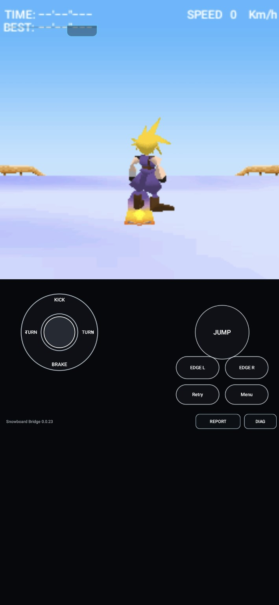

We finally had a picture, and I was inside Cloud’s chest. This was one of the early bridges, so getting anything recognizable out of the renderer mattered. It took a while to realize that the geometry was the problem. Fixing that gave us Cloud—and another very obvious problem.
A little too close to the main character
This is how I remember some of our first rendering: “At first I was stuck inside his body, then everything was upside down.” The phone reports we still have start at version 0.0.15. By then, the original English Offline game classes were already running inside a 240×240 framebuffer.F01F02
Cloud was making it through a surprising amount of the pipeline. The bridge could load his MBAC model, its texture and its MTRA animation table. The model had 423 triangles; the animation table had 27 actions and 21 bones. There was a recognizable character’s worth of data in there. The view was simply far too intimate.F02
We first corrected how the model chose its visible parts. The original file carries appearance-pattern groups, and we had been drawing alternate groups together. Version 0.0.16 kept the pattern masks and filtered inactive triangles. That fixed something real, but Cloud still covered thousands of projected pixels on a screen only 240 pixels wide.F03F05
The missing conversion
That mismatch finally gave the geometry investigation something concrete to grab. The course was living in a sensible range of world coordinates. Cloud’s model was arriving as raw model integers. The game’s own bytecode shifted its world translations by six bits before submitting them as DoJa transform values; the bridge had not made the corresponding conversion for the Figure geometry.F04
The 0.0.17 experiment applied a Figure-only scale of 1/64, after the skeletal animation had deformed the model and before the game’s world/view matrix positioned it. The terrain stayed at its existing scale. Shrinking the whole world would have carried the mismatch along with it; the conversion belonged where model geometry entered that world.F04
The next phone report makes the difference hard to miss. A logged Cloud pose that had spanned enormous projected bounds now has an X range of 109 to 132. The raw pose is still there, the animation is still there, and the new trace explicitly records unitScale=1/64.F05F06
“Holy shit! It's cloud! Just upside down I think lol”Wakka · September 29, 2026 F01
I could finally tell it was Cloud. That also meant I could tell he was upside down. After staring at the inside of the model, I was quite happy to have a problem I could actually recognize.
The wrong way up
The next diagnosis reached beyond Cloud. The perspective course geometry was inverted too. The bridge’s parallel projection added view Y to screen Y; its perspective projection subtracted it. Two paths inside the same renderer disagreed about which way the screen went.F07
That disagreement put mostly negative-Y course geometry above the horizon while the mostly positive-Y character appeared head-down. Version 0.0.18 made the perspective path follow the same downward-positive screen convention as the parallel path. The change applied to both the Figure and the terrain, with the 1/64 model conversion left in place.F07
The following report keeps the same small X bounds for the logged pose and moves its projected Y range from −43…16 to 223…283. The scale repair had survived the orientation repair. The bridge was learning to agree with itself about both the size of the rider and the direction of the world.F06F08

Outside the character, right way up, and on a snowboard. This preserved image comes after the scale and projection repairs.
Open the image to inspect the original screenshot.
F16The next wrong thing
Getting the scene into view left us with a title sequence that flashed black, gray and white. The 0.0.19 notes explain why: Android could redraw the shared bitmap while the game was still drawing into it. We needed to wait for a completed frame, then swap that finished picture into view.F09
There was another small API trap in the fades. Under the relevant DoJa blend modes, a transparency value of 100 means the source is fully visible. The bridge had treated it as fully transparent. The same pass corrected that interpretation and stopped flushes from presenting unfinished work.F09
Then the menu cursor and its text stopped agreeing about where a row was. The game had already added the font ascent before calling drawString; the bridge added it again. The HUD had its own cramped problem: the game requested a tiny font, but the bridge ignored the size flag and drew a larger one. Labels such as TIME and BEST ran into their numbers.F10
Version 0.0.20 removed the extra ascent, honored the tiny-font request and enlarged the touch targets. Those changes left the working 3D path alone. With the big geometric mistakes out of the way, the small mistakes finally had room to be obvious.F10
Left was not always “turn left”
The controls produced one more useful surprise. In the original Button scheme, numeric 4 and 6 turn the rider. The D-pad’s left and right inputs are edge controls. The previous bridge had put those D-pad actions on its main steering arrows. A button could look perfectly reasonable while sending a different snowboard action than the player expected.F11
In 0.0.21, we sent the actual numeric turning inputs during a race and kept separate edge controls. Menus still needed ordinary directional navigation. Later, the two-stage custom stick gave us another reminder that working inputs could still feel wrong in my hands.F11F14
Going back to the untouched keypad showed me how simple the original digital layout already was. I asked for those useful race inputs to become fixed, two-handed touch buttons. The preservation snapshot records the layout I accepted, with the keypad still available.F14F15
A very good silent success
By October 3, I was happy enough with the picture and the feel to call the pass a success. We still had no sound:
“still no audio. but visually and gameplay wise i prefer it to what it was. so i would say this was 100% a success.”Wakka · recorded October 3 feedback F12
I wanted to keep the new presentation and gameplay feel while we worked on the music. The early reports had been making silent MLD requests all along. When the audio finally worked, my next message was much shorter.F02F12
“Audio works perfect.”Wakka · recorded October 4 feedback F13
We had gone from the inside of Cloud’s chest to an upright rider on the course, with the music back too. I remember the awkward pictures because each one showed us something the black screen couldn’t. Seeing him upside down was funny. It also told us what to fix next.
About these records
The first-render/chest opening is the owner’s recollection and retrospective account; the preserved report set starts at 0.0.15. Versions 0.0.17 and 0.0.18 document separate model-scale and projection-Y repairs. The 0.0.21 README is stale, and the 0.0.23 archive retains a folder named 0.0.22; their build notes identify the actual passes. The reproduced screenshot is a later 0.0.23 image, not a reconstruction of an early failure. The chapter ends with the inspected preservation notes and dated October 3–4 feedback; later checkpoint names and public-import validation are separate work.
The receipts
Selected report lines, investigation notes and recorded feedback behind the story. Each receipt keeps its source and context.
F01 / “Holy shit! It’s cloud!”Conversation excerpts
Source: Wakka / Snowboarding development conversation and post draft / September 29–30, 2026
Retrieved owner-message excerpts, retaining the wording. The first time is converted from the recorded UTC timestamp to Iowa local time. The chest/first-render opening is also Wakka’s recollection in the current archive conversation; the preserved report sequence begins at 0.0.15.
September 29, 22:50:40 CDT — “Holy shit! It's cloud! Just upside down I think lol” September 30 — “At first I was stuck inside his body, then everything was upside down”
F02 / The original game is running in a 240×240 displayPhone runtime report
Source: Snowboard-Bridge-v0.0.15-report-20260929-215852.txt · selected lines 6–9, 13–16, 152, 144, 49
The latest-summary triangle/flush fields describe a particular report moment. They are not an FPS reading or a full visual verdict.
Framebuffer: 240x240 ARGB_8888 Keypad state: 0x0 Soft labels: Retry / Menu Current 3D: 3D +Z flush=2355 tri=863 px=83903 front/back=1380/32 clip=39 n/f=8/500 a=45 [... selected excerpt ...] 0.004 DEX Loading actual English Offline Snowboarding classes 0.004 GAME CODE SnowBoard class loaded 0.004 GAME CODE SnowBoard instance created 0.004 GAME CODE enter SnowBoard.start [... selected excerpt ...] 3.838 3D FIGURE cloud.mbac tri=423 queued=239 textured=239/423 tex=SB_basic.bmp uv=2..141,1..95 projected=177 bbox=-1038..10830,-591..25787 viewZ=5..478 raw=-177..147/-50..277/-326..383 bind=-282..282/0..689/-326..383 pose=anim poseBounds=-186..148/-129..581/-253..410 action=cloud.mtra#25 time=0 maxFrame=458752 front/back=177/45 near=1 far=500 fov=45 [... selected excerpt ...] 3.814 AUDIO MLD requested (silent v0.0.1), bytes=10987 [... selected excerpt ...] 0.039 3D OBJECT ActionTable cloud.mtra actions=27 bones=21
F03 / One real fix that still leaves a giant CloudCheckpoint development notes
Source: Snowboard_Bridge_v0.0.16_Preservation.zip / BUILD_NOTES.md · selected lines 6–24
## Evidence behind this pass - `cloud.mbac` contains 3 appearance-pattern groups. - Pattern 0 contains the shared/base Cloud geometry. - Pattern 1 and pattern 2 each contain an additional 14 textured quads. - `cloud.mtra` v5 dynamic appearance data supplies masks `0x2` for actions 0-23 and `0x4` for actions 24-26. - v0.0.15 parsed that MBAC pattern table but discarded it, so both alternate 14-quad groups were rendered simultaneously. - DoJa `Figure.setTime()` is defined to update both pose and appearance state from the active ActionTable. ## Changes - Preserve MBAC v5 per-pattern polygon counts. - Expand those polygon groups to a per-render-triangle pattern mask. - Base pattern-0 polygons remain always visible. - Alternate polygon groups use the documented 32-bit appearance mask (`1 << patternIndex`). - `Figure.setTime()` now applies MTRA dynamic appearance state using the existing `ActionTable.patternFor()` parser. - `Figure.setAction()` continues to reset time to zero and therefore now also selects the action's initial appearance state. - Added `Figure.getNumPatterns()` and `Figure.setPattern(int)` compatibility methods. - Renderer filters inactive Figure triangles instead of drawing every appearance state at once. - Figure telemetry now reports `patterns`, current `pat=0x...`, and `patHide` triangle count. - Corrected MBAC triangle/quad winding to the reference order while preserving matching UVs.
F04 / The model and the world are speaking different unitsCheckpoint development notes
Source: Snowboard_Bridge_v0.0.17_Preservation.zip / BUILD_NOTES.md · selected lines 3–11
## Figure model-unit pass v0.0.16 proved that Cloud is animated, textured, pattern-filtered, and still projected thousands of pixels across a 240x240 framebuffer. The device report also shows the course/Primitive geometry living in a much smaller and sane world-coordinate range. Snowboarding's own bytecode converts its internal world translations to DoJa Transform floats with `>> 6` (26.6-style units) before `Graphics3D.setTransform`. MBAC Figure geometry, however, was still being submitted by the bridge as raw model integers. v0.0.17 therefore applies a **Figure-only 1/64 model-to-world conversion after MTRA skeletal deformation and before the game-supplied world/view matrix**. Dynamic Primitive terrain is intentionally unchanged. Camera convention, +Z projection, Z buffer, textures, MTRA animation, appearance-pattern filtering, controls, scratchpad and report output are unchanged. New Figure telemetry includes `unitScale=1/64`, raw pose bounds, scaled world bounds, projected bbox and view-Z range.
F05 / The large projected bounds are in the phone tracePhone runtime report
Source: Snowboard-Bridge-v0.0.16-report-20260929-222612.txt · selected lines 142
3.626 3D FIGURE cloud.mbac tri=423 queued=219 textured=219/423 tex=SB_basic.bmp uv=2..141,1..95 projected=177 bbox=-1038..10830,-591..25787 viewZ=5..478 raw=-177..147/-50..277/-326..383 bind=-282..282/0..689/-326..383 pose=anim poseBounds=-186..148/-129..581/-253..410 patterns=3 pat=0x4 patHide=28 action=cloud.mtra#25 time=0 maxFrame=458752 front/back=177/45 near=1 far=500 fov=45
F06 / After 1/64 scaling, Cloud fits a much smaller footprintPhone runtime report
Source: Snowboard-Bridge-v0.0.17-report-20260929-224824.txt · selected lines 143
3.892 3D FIGURE cloud.mbac tri=423 queued=394 textured=394/423 tex=SB_basic.bmp uv=2..141,1..95 projected=222 bbox=109..132,-43..16 viewZ=65..75 raw=-177..147/-50..277/-326..383 bind=-282..282/0..689/-326..383 pose=anim poseBounds=-186..148/-129..581/-253..410 worldBounds=-2.91..2.31/-2.02..9.08/-3.95..6.41 unitScale=1/64 patterns=3 pat=0x4 patHide=28 action=cloud.mtra#25 time=0 maxFrame=458752 front/back=222/0 near=1 far=500 fov=45
F07 / Cloud and the course share the upside-down projectionCheckpoint development notes
Source: Snowboard_Bridge_v0.0.18_Preservation.zip / BUILD_NOTES.md · selected lines 3–18
## Perspective Y-orientation pass v0.0.17 proved the Figure 1/64 model-to-world conversion: Cloud now occupies a sane on-screen footprint (roughly tens of pixels rather than thousands), but the device recording shows Cloud and the perspective course geometry vertically inverted. The bridge had an internal projection inconsistency: - parallel projection mapped `+viewY` to `+screenY` - perspective projection mapped `+viewY` to `-screenY` On the device, this made Snowboarding's mostly-negative-Y course geometry appear above the horizon while Cloud's mostly-positive-Y Figure geometry appeared head-down. v0.0.18 changes only the perspective screen-Y mapping so it matches the DoJa/Canvas downward-positive screen convention already used by the parallel path: `screenY = centerY + viewY * focal / viewZ` The change is applied to both Figure and Primitive perspective projection. Figure scaling, MTRA animation, pattern filtering, textures, camera transforms, +Z view convention, Z buffer, terrain generation, controls, storage and reporting are unchanged. Telemetry remains enabled so the device report can confirm Cloud's bbox/depth after the orientation correction.
F08 / The following report retains the scale and changes Y boundsPhone runtime report
Source: Snowboard-Bridge-v0.0.18-report-20260929-225955.txt · selected lines 142
3.748 3D FIGURE cloud.mbac tri=423 queued=394 textured=394/423 tex=SB_basic.bmp uv=2..141,1..95 projected=222 bbox=109..132,223..283 viewZ=65..75 raw=-177..147/-50..277/-326..383 bind=-282..282/0..689/-326..383 pose=anim poseBounds=-186..148/-129..581/-253..410 worldBounds=-2.91..2.31/-2.02..9.08/-3.95..6.41 unitScale=1/64 patterns=3 pat=0x4 patHide=28 action=cloud.mtra#25 time=0 maxFrame=458752 front/back=222/0 near=1 far=500 fov=45
F09 / The screen was showing unfinished framesCheckpoint development notes
Source: Snowboard_Bridge_v0.0.19_Preservation.zip / BUILD_NOTES.md · selected lines 5–23
Polish the now-playable v0.0.18 build without destabilizing gameplay. This pass targets the startup/menu flashing shown in the 2026-09-29 device recording and reduces the always-visible development chrome. ## Evidence The second v0.0.18 recording repeatedly exposes black/gray/white intermediate versions of the same Square Enix/credit/title frame. Two bridge behaviors could produce exactly that: 1. The bridge displayed the same 240x240 bitmap while the game thread was still drawing into it. `BridgeLog`, `flushBuffer()` and UI updates could therefore trigger Android redraws before `Graphics.unlock(true)` marked the DoJa frame complete. 2. DoJa `DrawableObject3D.setTransparency()` defines 100 percent as fully opaque/source-visible for `BLEND_ALPHA` and `BLEND_ADD`. The bridge had this reversed (100 -> transparent). Snowboarding's fade helper explicitly uses `BLEND_ALPHA` with changing 0..100 transparency. ## Changes - Added a two-buffer presentation layer. The game continues drawing into its existing back buffer; `Graphics.unlock(true)` copies the completed frame into the inactive presentation bitmap and atomically swaps it visible. - `Graphics3D.flushBuffer()` no longer invalidates/presents a half-finished frame. - Corrected DoJa blend semantics: - `BLEND_NORMAL`: transparency ignored, opaque draw. - `BLEND_ALPHA`: source contribution = transparency percent (`100` = opaque). - `BLEND_ADD`: destination + source * transparency percent, saturated per RGB channel. - Primitive default transparency is now 100 percent. - Added primitive blend/transparency telemetry for future reports.
F10 / Text ascent was added twice; the tiny font was ignoredCheckpoint development notes
Source: Snowboard_Bridge_v0.0.20_Preservation.zip / BUILD_NOTES.md · selected lines 7–26
## Evidence from the v0.0.19 device run - The S25 run is playable, but the Android D-pad, OK and soft keys are materially too small for comfortable touch use. - Snowboarding's pause-menu selection cursor is vertically separated from the menu label it selects. - HUD strings such as `TIME:` / `BEST:` overlap their numeric values. The game bytecode explains both in-game UI faults: - Snowboarding already adds `Font.getAscent()` to the requested top coordinate before calling DoJa `Graphics.drawString()`. The bridge also added ascent inside `drawString()`, moving every string down by one additional ascent. - Snowboarding requests DoJa `SIZE_TINY` (`0x70000400`), but the bridge ignored the font flags and always rendered a 14-dot Android font. The HUD deliberately starts the timer value only 29 pixels after `TIME:` and 30 pixels after `BEST:`, so the oversized font forces overlap. ## Changes - DoJa `Graphics.drawString()` now treats its Y argument as the baseline, matching the DoJa drawing model. Removed the second ascent offset. - Implemented DoJa font-size flag decoding with a 10-dot `SIZE_TINY` default and basic tiny/small/medium/large mappings. - Font measurement and drawing now use the same selected Android Paint, keeping `stringWidth()`, ascent, height and rendered text internally consistent. - Greatly enlarged the Android D-pad and OK control without covering the game viewport. - Enlarged the game-driven soft-key pills and label text. - Increased invisible touch margins beyond the visible controls. - D-pad overlap now resolves to the nearest cardinal button rather than depending on hit-test order.
F11 / The arrows were edging; 4 and 6 were turningCheckpoint development notes
Source: Snowboard_Bridge_v0.0.21_Preservation.zip / BUILD_NOTES.md · selected lines 7–18, 22–40
## Why the old control layout felt wrong The game's packaged help defines the original Button scheme as: - 4 / 6 = Turn Left / Turn Right - Up (or 2) = Kick - Down (or 8) = Slow Down - Confirm (or 5) = Jump / Spin Jump - D-pad Left (or 1) = Left Edge Control - D-pad Right (or 3) = Right Edge Control The previous bridge exposed D-pad Left/Right as the main steering control, which meant the primary touch arrows were sending edge-control commands rather than the game's actual 4/6 turning commands. [... selected excerpt ...] - Added DoJa numeric key masks for KEY_4 and KEY_6 using the official Display key codes (0x04 and 0x06). - Replaced the four separate game-direction circles with one large drag-style virtual control pad. - During active racing (`Retry / Menu` soft labels): - drag left/right -> numeric 4/6 actual turning, - drag up -> Kick, - drag down -> Slow Down, - diagonals combine turn + kick/slow in one touch. - Added a large JUMP button (Confirm/5 behavior). - Added separate large EDGE L / EDGE R buttons for the original D-pad edge-control actions. - Preserved Retry/Menu soft keys below the gameplay controls. - Outside an active race the same left pad automatically becomes a normal cardinal D-pad, so menus/config/help remain navigable. - Multi-touch remains supported so steering + Jump/Edge inputs can be combined. - Diagnostics now label numeric steering input as TURN_L / TURN_R. ## Intentionally unchanged - v0.0.20 font/text corrections. - All 3D, animation, texture, camera, presentation-buffer and fade behavior. - Audio remains the existing MLD stub in this build; audio is the next runtime target after confirming the corrected original steering inputs on-device.
F12 / A visual/gameplay success, with sound still missingRecorded owner feedback
Source: FFVII Snowboarding preservation / PHONE_FEEDBACK_20261003.txt · selected lines 6–17
Owner statement: "still no audio. but visually and gameplay wise i prefer it to what it was. so i would say this was 100% a success." The owner also describes the screenshots as the old UI and the new UI with custom controls and the option for the native keypad. Recorded outcome: - Owner-approved Snowboarding presentation/gameplay baseline: Omni 0.1.0. - Owner prefers the new visuals and gameplay feel to the old Snowboard .23 UI. - Custom controls and native keypad option are present in the phone screenshots. - Missing MLD audio remains confirmed and unresolved. - Pause/resume stress, full input combinations and report exports were not
F13 / “Audio works perfect.”Recorded owner feedback
Source: FFVII Snowboarding preservation / PHONE_FEEDBACK_20261004_AUDIO.txt · selected lines 1–10
OWNER PHONE FEEDBACK — 2026-10-04 Scope: FFVII Snowboarding Omni audio-fix build, before the two-stage custom-control revision. Owner report: "Audio works perfect." Interpretation: - Restored Snowboarding music playback is phone-verified by the owner. - This does not independently validate the later two-stage custom-control revision. - Native keypad behavior remains intentionally unchanged.
F14 / The two-stage stick worked technically, but felt wrongRecorded control feedback
Source: FFVII Snowboarding preservation / PHONE_FEEDBACK_20261004_CUSTOM_CONTROLS.txt · selected lines 3–16
Date: 2026-10-04 Scope: FFVII Snowboarding Bridge v0.1.0 two-stage custom-control trial. Owner result: - The two-stage custom-control build worked technically. - Owner did not like how the two-stage stick felt in play. - Returning to the unchanged Keypad page showed that the original digital input layout is already simple and effective. - Owner authorized a bounded custom-page redesign that keeps the keypad semantics and simply rearranges the useful race inputs for comfortable two-handed touchscreen play. Boundaries for the next candidate: - Do not change the native Keypad page. - Do not change audio, game logic, renderer, package identity or signing. - Custom race page should expose fixed digital buttons: EDGE LEFT / TURN LEFT, EDGE RIGHT / TURN RIGHT, KICK / JUMP / BRAKE, Retry / Menu. - Menu mode should retain direct cardinal/confirm navigation without using race-only numeric 4/6.
F15 / The fixed-button layout reaches the later preservation snapshotCheckpoint summary
Source: FFVII Snowboarding v0.1.2 / README_FIRST.txt · selected lines 14–17
This later snapshot describes the preserved approved layout and audio baseline. The public-import candidate has its own verification boundary.
The full native keypad remains available. The custom page uses the owner-approved two-handed fixed-button layout: EDGE/TURN on the left and right, KICK/JUMP/BRAKE in the center. The phone-verified audio implementation is retained; v0.1.2 changes only the public packaging/import boundary and final app identity around that baseline.
F16 / Cloud upright in the later 0.0.23 screenshotPreserved screenshot
Source: 1000095964.jpg
Inspected as pixels before inclusion. The image has no personal contact details, private installation paths, signing data or account identifiers. Screenshot copyright remains with its respective game owners.
The preserved screenshot displays Cloud upright on his snowboard, a snowy course/bridge, and the bridge controls. The on-screen version label reads Snowboard Bridge 0.0.23. The chapter reproduces this image unchanged. It is a later screenshot, not an image of the chest or upside-down failure. Image SHA-256: deaa75dbbb4906fc52d24042ea3fe9ba7594dd8ee4330e0527fc1022cd41c91a